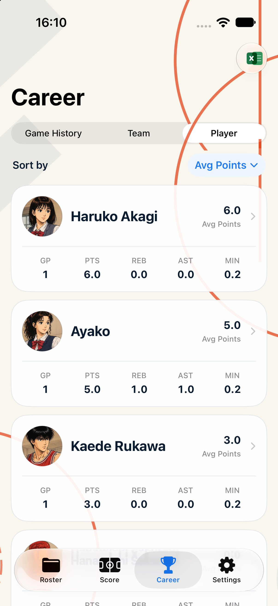

Career Player Tab 实施验收
状态：已编译并在 iPhone 17 Simulator 截图验证
- 实现位置：
BasketballRecord/Views/Career/CareerView.swift - 保留现有排序字段、PlayerProfileView 跳转、导出入口、头像和所有统计数据。
- 视觉改为 Adaptive A 球员卡：头像、姓名、位置（已有数据时）、排序值、GP、PTS、REB、AST、MIN。
- 数字排名圆圈未实现。
- 仅增加 Debug 截图参数
-screenshotCareerBoard enum_player，不影响发布构建默认行为。 - 未修改
BasketballRecord/Views/Game/，未修改存储模型或本地化资源。
验证设备：iPhone 17 / iOS 27.0 / 1206×2622；Debug build succeeded。

本轮没有执行 Git commit。